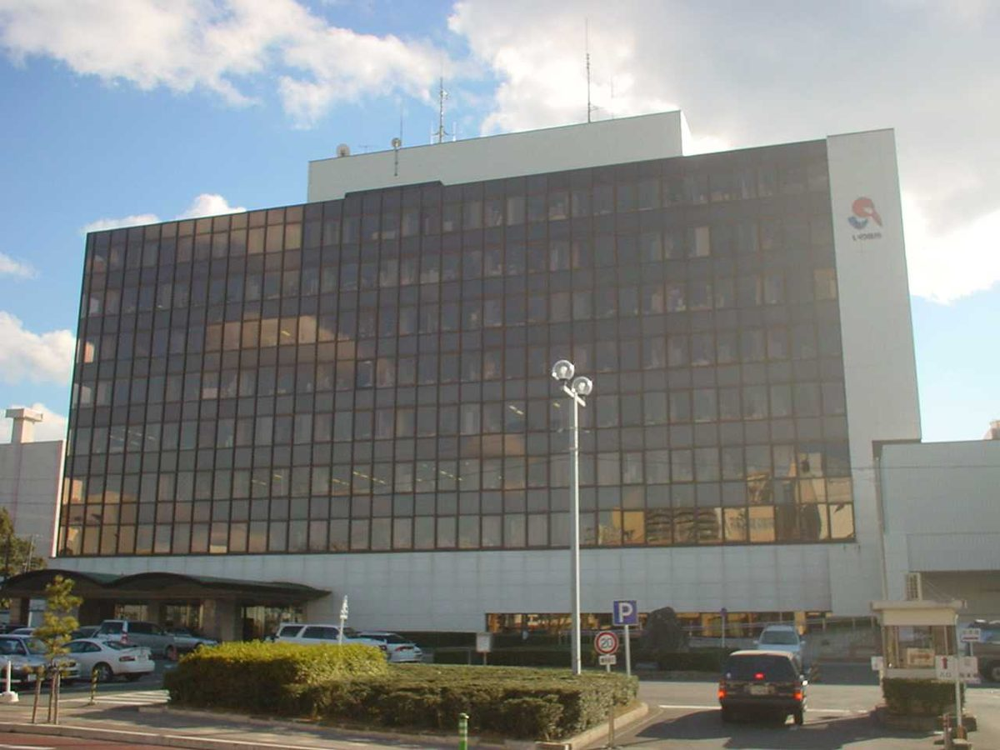

일본 이와키시, 2027년 4월부터 시청 본청사 등 12곳 전기를 시내 재생에너지 발전소 전력으로…초·중학교 등 공공시설 114곳도 전환

시와 연계 협정을 맺은 업체가 시내 발전소 전력을 모아 공급, 실제 공급할 소매 전기사업자는 17일~12월 3일 온라인 경매로 선정
일본 후쿠시마현 이와키시가 내년 4월부터 시청 본청사와 동분청사, 각 지소, 종합보건복지센터 등 12개 시설에서 쓰는 전기를 시내 발전소에서 생산한 재생에너지 전력으로 바꾼다. 시는 시 사무와 사업에서 나오는 온실가스를 줄이고 재생에너지 전력의 지역 생산·지역 소비를 넓히려는 조치라고 설명했다. 시와 연계 협정을 맺은 요코하마의 마치미라이세이사쿠쇼(まち未来製作所)가 시내 재생에너지 발전소에서 전력을 조달하고, 실제 공급을 맡을 소매 전기사업자는 지자체의 재생에너지 도입을 돕는 에나뱅크(エナーバンク)의 경매로 이달 17일부터 12월 3일까지 정한다. 시는 이 경매 계획을 6일 발표했다. 이와 별도로 초·중학교 등 공공시설 114곳의 전력도 내년 4월부터 재생에너지로 바뀐다.
시민에너지 관점
지자체가 청사 전기를 지역 발전소에서 사 주면 지역 사업자와 주민이 지은 발전소에 안정적인 판로가 생기고, 전기요금으로 지역 밖으로 빠져나가던 돈이 지역 안에서 돈다. 재생에너지 전기가 비싸지 않겠느냐는 걱정은 경매로 공급자를 골라 가격 경쟁을 붙이는 방식으로 덜 수 있다. 우리 지자체 청사와 학교는 대부분 전기를 한전에서 그대로 사 쓰고 있어, 지역 시민 발전소의 전기를 지자체가 직접 사 줄 길은 아직 좁다. 지자체가 공공시설 전력을 지역 시민 발전소에서 우선 사는 '지산지소' 조달 방안을 조례와 제도 개선으로 마련하도록 요구하자.
출처: 福島民友新聞 2026-11-09 福島民友新聞社 원문 보기
いわき市、2027年4月から本庁舎など12施設の電力を市内の再エネ発電所由来に…小中学校など公共施設114カ所も切り替え
市と連携協定を結ぶ企業が市内発電所の電力を調達して供給、実際に供給する小売電気事業者は17日〜12月3日のオンラインオークションで決定
福島県いわき市は来年4月から、市役所本庁舎と東分庁舎、各支所、総合保健福祉センターなど12施設で使う電力を、市内の発電所でつくられた再生可能エネルギー由来の電力に切り替える。市は、市の事務・事業から出る温室効果ガスを減らし、再エネ電力の地産地消を広げるための措置だと説明している。市と連携協定を結ぶ横浜市のまち未来製作所が市内の再エネ発電所から電力を調達し、実際の供給を担う小売電気事業者は、自治体の再エネ導入を支援するエナーバンクのオークションで今月17日から12月3日にかけて決める。市はこのオークションの実施を6日に発表した。これとは別に、小中学校など114の公共施設の電力も来年4月から再エネに切り替わる。
市民エネルギーの視点
自治体が庁舎の電気を地域の発電所から買えば、地域の事業者や住民が建てた発電所に安定した販路が生まれ、電気料金として地域の外に流れていたお金が地域の中で回るようになる。再エネの電気は高くつくのではという懸念は、オークションで供給者を選び価格競争をさせる方法で和らげられる。韓国では自治体の庁舎や学校の多くが電気を韓国電力からそのまま買っており、地域の市民発電所の電気を自治体が直接買う道はまだ狭い。韓国の自治体にも、公共施設の電力を地域の市民発電所から優先的に買う「地産地消」の調達策を、条例と制度改善で整えるよう求めよう。
出典: 福島民友新聞 2026-11-09 福島民友新聞社 原文を読む
日本磐城市自2027年4月起将市政府本厅舍等12处设施用电改为市内可再生能源电站电力…中小学等114处公共设施也将转换
与市政府签订合作协定的企业从市内电站采购电力并供应，实际供电的零售电力企业将于17日至12月3日通过在线竞拍选定
日本福岛县磐城市将从明年4月起，把市政府本厅舍、东分厅舍、各支所以及综合保健福利中心等12处设施的用电，改为由市内电站生产的可再生能源电力。市政府表示，此举旨在减少市政事务和事业产生的温室气体，并扩大可再生能源电力的本地生产、本地消费。与市政府签订合作协定的横滨企业"まち未来製作所"将从市内的可再生能源电站采购电力，实际负责供电的零售电力企业则将于本月17日至12月3日，通过协助地方政府引入可再生能源的Enerbank公司举办的竞拍来确定。市政府于6日宣布了这项竞拍计划。此外，中小学等114处公共设施的电力也将从明年4月起改为可再生能源。
市民能源视角
地方政府从本地电站购买办公楼用电，就能为本地企业和居民建设的电站提供稳定的销路，原本以电费形式流出地区的资金也能在本地循环。对于可再生能源电力会不会更贵的担忧，可以通过竞拍选择供应商、引入价格竞争来缓解。在韩国，地方政府办公楼和学校大多直接向韩国电力公社购电，由地方政府直接购买本地市民电站电力的渠道还很窄。应当要求韩国地方政府通过条例和制度改进，建立公共设施优先从本地市民电站购电的"地产地消"采购办法。
来源: 福岛民友新闻 2026-11-09 福岛民友新闻社 查看原文
Japan's Iwaki City to Switch 12 Facilities Including City Hall to Power From Local Renewable Plants From April 2027, With 114 Schools and Other Public Facilities to Follow
A company with a partnership agreement with the city will source power from plants within the city, and the retail electricity supplier will be chosen in an online auction from the 17th to December 3
Iwaki City in Japan's Fukushima Prefecture will switch the electricity used at 12 facilities, including the main city hall building, its east annex, branch offices and a comprehensive health and welfare center, to renewable power generated at plants within the city from April next year. The city said the move aims to cut greenhouse gas emissions from its own operations and expand local production and local consumption of renewable electricity. Machi Mirai Seisakusho, a Yokohama-based company that has a partnership agreement with the city, will procure power from renewable plants in Iwaki, and the retail electricity supplier that will actually deliver it will be selected through an auction run by Enerbank, which helps local governments adopt renewables, from the 17th of this month to December 3. The city announced the auction plan on the 6th. Separately, power for 114 public facilities, including elementary and junior high schools, will also switch to renewables from April next year.
Citizen Energy View
When a local government buys electricity for its offices from local plants, plants built by local businesses and residents gain a stable market, and money that used to leave the region as power bills circulates locally. Worries that renewable power will cost more can be eased by choosing suppliers through auctions that create price competition. In Korea, most local government offices and schools simply buy power from KEPCO, and there is still little room for local governments to buy directly from citizen-owned plants in their area. Korean local governments should be pressed to create local-production, local-consumption procurement rules, through ordinances and institutional reform, that give priority to power from community-owned plants for public facilities.
Source: Fukushima Minyu Shimbun 2026-11-09 Fukushima Minyu Shimbun Read the original